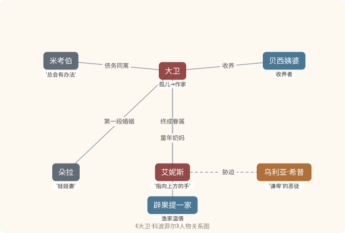

大卫·科波菲尔
一、基本信息
| 作者 | 狄更斯 |
|---|---|
| 成书/出版 | 1849—1850年连载出版（Britannica 语境） Charles Dickens — Encyclopaedia Britannica（百科全书） |
| 国别/地区 | 英国 |
| 时代 | 近代 · 19世纪 |
| 体裁 | 长篇小说（半自传成长小说） |
| 语言 | 英语 |

《大卫·科波菲尔》人物关系图（人物关系图）
二、创作背景
半自传（Britannica）：'partly autobiographical'——鞋油厂童年、父亲的债务与米考伯式负债性格（Britannica：His father's failings inspired the character Mr. Micawber in the partly autobiographical David Copperfield）。
自述：狄更斯在序言中称其为'心中最宠爱的孩子'（'favourite child'——通说待核）。
成长小说（Bildungsroman）的英国典范：从孤儿到作家的路径（通说）。
三、内容脉络
童年：大卫生于父死后，与年轻母亲及女仆辟果提相依；继父摩德斯通姐弟的'坚定'规训；母亲死后入萨伦学校（克里克尔先生）、后进伦敦酒厂当童工——与米考伯同寓、入债狱（通说）。
出走：徒步逃往多佛投奔姨婆贝西·特洛伍德——被收养改名'特洛伍德'；坎特伯雷上学、寄宿威克菲尔家、遇其女艾妮斯（通说）。
职业与爱情：代理人事务所学徒、速记员成名、与朵拉结婚（'娃娃妻'早逝——通说）；乌利亚·希普的阴谋以 Micawber 的证据揭穿（通说）。
结局：艾格尼丝的隐忍之爱终获回应——'读者，我嫁给了他'是简·爱；狄更斯的回应是：大卫在艾妮斯身旁'指着那盏灯'（原文意，待核）——与艾妮斯结婚、成为成功作家，身边永远有'那 pointing upward 的手'（结尾意象，通说待核）。
四、主要人物表
| 人物 | 身份 | 说明 |
|---|---|---|
| 大卫·科波菲尔 | 孤儿→作家 | 作者的自画像：观察、记忆与写作的救赎（通说） |
| 米考伯 | 债多乐观的绅士 | '总有办法'与'债多不愁'——以狄更斯父亲为原型（Britannica） |
| 贝西姨婆 | 姨婆 | 外冷内热的收养者（通说） |
| 艾妮斯 | 威克菲尔之女 | ' pointing upward'的天使——狄更斯理想女性（通说） |
| 乌利亚·希普 | '谦卑'的恶徒 | 'umbleness'的伪善——维多利亚最著名反派之一（通说） |
| 朵拉 | 第一任妻子 | '娃娃妻'——浪漫幻象与死亡（通说） |
五、主题与艺术特点
- 成长与写作：'我成为我自己作品里的英雄'（开篇原文意，待核）——经验如何转化为小说。
- 债务与家庭：米考伯主义、监狱制度（Britannica 语境）。
- 婚姻的两种形态：朵拉（天真）与艾妮斯（心智伴侣）——狄更斯的女性观（通说）。
- 艺术特点：回忆的第一人称、人物名册与重复口癖（'Barkis is willin''）、悲喜的连续流动。
六、影响与评论
- Britannica（Dickens 条）：父亲原型即 Micawber 的部分自传小说（Britannica：His father's failings inspired the character Mr. Micawber in the partly autobiographical David Copperfield）。
Charles Dickens — Encyclopaedia Britannica（百科全书） - 评价：托尔斯泰、卡夫卡、弗洛伊德均钟爱此书（'If I were to name the greatest novel...'——弗洛伊德送分析与病人此书轶事——通说待核）。
Charles Dickens — Encyclopaedia Britannica（百科全书） - 中译：董秋斯/张谷若译本（通说待核）。
Charles Dickens — Encyclopaedia Britannica（百科全书）
七、阅读建议
难点
- 60余万词的体量与 dozens of 人物——分四部阅读、做人物表。
- 维多利亚 sentimental 传统（朵拉/艾妮斯）与今日读者趣味差异。
- 德文/俄文译名对照（通说待核）。
- 董秋斯译《大卫·科波菲尔》（人民文学出版社，通说待核）：通行全译。
- 庄绎传译本（人民文学，通说待核）。
- 英文本：Penguin/Oxford World's Classics（通说待核）。
通读 → 精读开篇'我会成为我人生主角吗？'、米考伯入狱段与结尾 → 对照《远大前程》看狄更斯成长书写的深化。
八、待核实
- 连载期（1849年5月—1850年11月，Bradbury & Evans 一卷本1850说，通称）细节待核。
- 'favourite child'序言原文逐字核对待完成。
- 董秋斯/庄绎传译本信息待核。
- 结尾'pointing upward'意象原文核对。